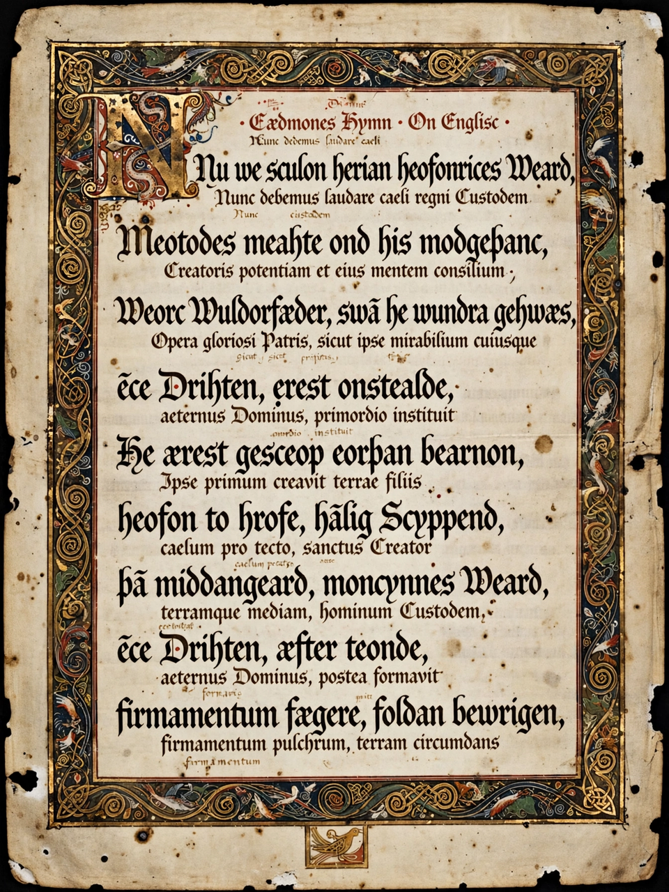

Wikipedia — The Free Encyclopedia

Old English literature, or Anglo-Saxon literature, comprises the surviving works written in Old English in Anglo-Saxon England, from the settlement of the Angles and Saxons in the mid-fifth century until the decades after the Norman Conquest of 1066. Though the surviving corpus is small — some 400 manuscripts — it includes the first great poem in English, Beowulf, alongside elegies, saints' lives, biblical paraphrases, chronicles, laws and riddles.
Old English verse is alliterative, built on lines of four stresses bound by repeating initial sounds, a form inherited from Germanic oral tradition. The great majority survives in four codices: the Beowulf manuscript, the Exeter Book, the Vercelli Book and the Junius manuscript. Besides Beowulf, whose hero battles the monster Grendel and a dragon, the corpus holds the elegies The Wanderer and The Seafarer, the heroic fragment The Battle of Maldon, the dream vision The Dream of the Rood, and the ninety-odd playful Riddles. The earliest dated English poem is Cædmon's Hymn, composed in the seventh century.
King Alfred the Great's programme of translation in the ninth century founded English prose, rendering Latin works such as Boethius's Consolation of Philosophy and Gregory's Pastoral Care into the vernacular. Later prose includes the Anglo-Saxon Chronicle, the homilies and saints' lives of Ælfric and Wulfstan, medical texts, charters and the earliest English law codes, beginning with those of Æthelberht of Kent (c. 602).